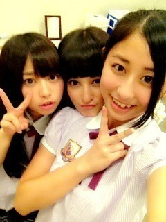

| 2012/08 25 Sat | がんばるがんばる。なんか最近世間一般でいう×2的なものにはまっているっぽいわ。なんかなんか、そーやってそーやって。うきゃきゃ(´>∀<｀)ゝ |
昨日、今日は来てくれた方々、
ほんとうありがとうヾ(*･∀･*)ﾉﾞ！
始めましての方、
お久しぶりの方、
嬉しかったヽ(^0^)ﾉ
楽しかったヽ(^0^)ﾉ
一日目はゆみこととまとと
イオンモール佐野新都市店さんに
いってきました

とまとは相変わらず自由で
それをゆみこがまとめてくれる感じ(笑)
握手する人多くて楽しかったねヽ(^ω^)ﾉ
ありがとーう

そして今日はねねころとせっさんと
イオンモール水戸内原店さんに
いってきましたー

1番でかい2人と1番ちっちゃいねねで
でこぼこトリオだったよ(笑)
見に来てくれた人いっぱいで
嬉しかったヽ(^0^)ﾉ
ありがとう

どっちのイオンさんにも
また行きたいなー(*´ω`*)

ね！ねね！

今日のメンバー紹介はーっ
まいやんまいやん！

まいやん20日は
お誕生日おめでとう◝(●˙꒳˙●)◜
20歳とかかっこいい♡
まいやんはね、初めてみたとき
すっごいびっくりしたんだ！
美人すぎて(´>∀<｀)
こんなに綺麗な人っているのねー
って思ったの覚えてる

整いすぎてるやばいー♡♡
でも美人すぎて
クールなイメージあって、
最初はおどおどしてたんだけどね
喋ってみるとすっごい
明るいし、面白いし、気さくだし、優しいし、
これまたびっくりしたのー

なんでもできすぎくんでしょー
料理も上手だしやばいやばい！
女の子の鏡
 って感じ
って感じ

って感じ
歌もうまいしね、まいやんの声とかかわいいからすきやねん♡
せっかちなかたつむりはツボ！
んま。色々語ったけど
結局はまいやん大好きなの(*´ω`*)
おねーたまおねーたま♡

東京公演も近くなってきて
リハとかぎっちりやあヽ(•̀ω•́ )ゝ✧
がんばるがんばる
でもね。聞いて。
宿題が終わってないのよ。宿題

がんばるがんばる
そしてそして、
オリコン１位♡♡！
おめでとうございます！
ありがとうございます！
わーわー

なんとゆう。なんとゆう嬉しさ。
皆さんのおかげです

ありがとう＼(^^)／
次回も、これからも頑張ります！
明日も元気に頑張るぞっ
おやすんっ
るんるんっ
ちはるんっ
(´>∀<｀)ゝ
コメント(79)
2012/08/25 00:30